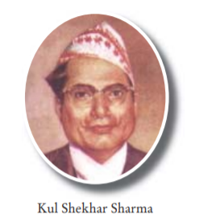

Biography:
Kul Shekhar Sharma was the 6th governor of Nepal.He was the governor
from April 29, 1973 to December 12, 1978 during the ruling period
of King Birendra.Signatue of Kulshekhar Sharma can be seen on the
currency of Rs 1, Rs 5, Rs 10, Rs 50, Rs 100, Rs 500 & Rs 1000.
For the first time Rs 50 was issued in Nepal.